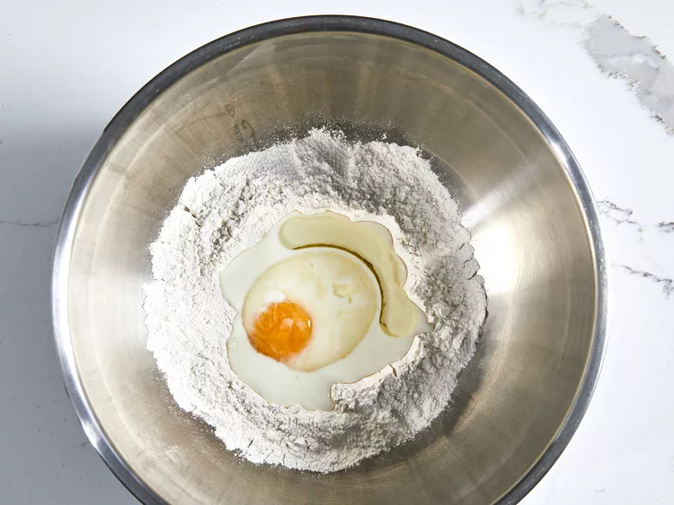
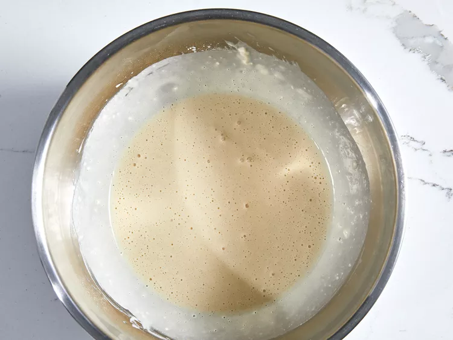
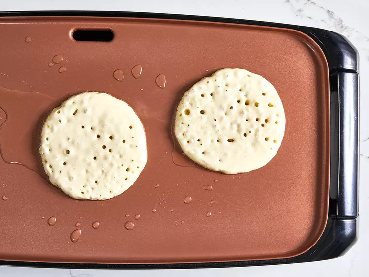
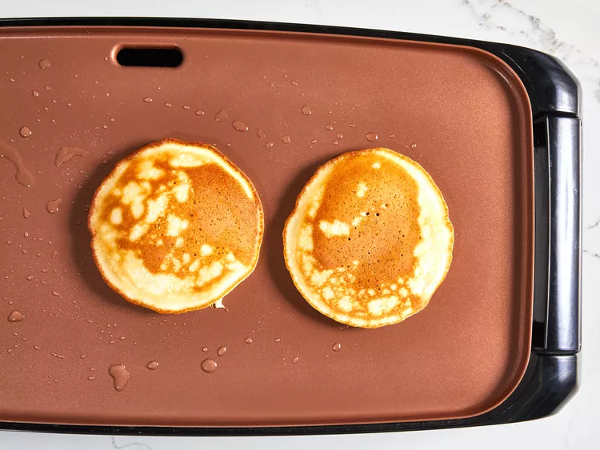

This easy pancake recipe doesn't require much thought early in the morning
and the pancakes taste great!
Recipe by: Hannah-Joy Simms
Recipe Description
Prep Time: Cook Time: Total Time: 10 minutes 10 minutes 20 minutes Servings: 4
Jump to Nutrition Facts
Step 1 Combine flour, sugar, baking powder, and salt in a large bowl. Make a well in the center, and pour in milk, oil, and egg. Mix until smooth. 
 Step 2 Heat a lightly oiled griddle or frying pan over medium-high heat. Pour or scoop batter onto the griddle, using approximately 1/4 cup for each pancake; cook until bubbles form and the edges are dry, 1 to 2 minutes. Flip and cook until browned on the other side. Repeat with remaining batter.   Step 3 Serve hot and enjoy!
Tips
These easy pancakes are best served with homemade blueberry compote.
Nutrition Facts (per serving)
247 10g 34g 7g Calories Fat Carbs Protien Show full nutrition label